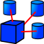

ここはFreeCADの初心者のためのヘルプエリアです。
このページはまだ開発の初期段階であることに注意してください。現在、エンドユーザのための十分なドキュメントがまだ整備されていません。これは、FreeCAD自体がいまだ開発の初期段階にとどまっており、ファイナルユーザーの興味を持つツールが用意されていないからです。
しかし、FreeCADは大変よく頑張っており、この状況は急速に改善しています。ですから、落ち込まないでください。このセクションの内容を閲覧して、もし必要な情報が見つからなければ、遠慮なく質問してください！開発者や、小さいですが成長を続けるFreeCADユーザコミュニティの中に、あなたを助けることができる人が必ずいるでしょう。ユーザーのハブの会話ページでwikiのドキュメントサイトに関するコメントを残すこともできますし、または直接、FreeCAD help forumで質問してください。
それから、あなたがここに乗せたい情報を持っているとしたら、何故それをここに追加してマニュアルの成長を手伝ってくれないんですか？wikiページの編集は簡単です。このページがあなたの手助けになってくれます。
FreeCADの使用
はじめに
- アプリケーションの概要: ：FreeCADの一般的な概要
- FreeCADのインストール：Linux / UnixおよびWindowsでの、FreeCADのインストールの仕方
- はじめよう：利用可能なツールの簡単な概要
- FAQ/jp：よくある質問
基本的なアプリケーション
- マウスモデル：3D空間を操作するためのマウスの使い方
- ドキュメントの構造：FreeCADドキュメントの作られ方
- 設定 と カスタマイズ：FreeCADを用途に応じて設定する方法
- プロパティ：FreeCADプロパティオブジェクトの仕組み
- ワークベンチのコンセプト：FreeCADインターフェースの作り方
- マクロ：頻繁に繰り返す作業の簡単な自動化方法
ワークベンチ
-
 パートデザインワークベンチ スケッチからの部品形状の作成用
パートデザインワークベンチ スケッチからの部品形状の作成用 -
 製図ワークベンチ ベーシックな2D-CAD製図用
製図ワークベンチ ベーシックな2D-CAD製図用 -
 メッシュワークベンチ 三角形メッシュでの作業用
メッシュワークベンチ 三角形メッシュでの作業用 -
 パートワークベンチ CAD部品での作業用
パートワークベンチ CAD部品での作業用 -
 画像ワークベンチ ビットマップ画像での作業用
画像ワークベンチ ビットマップ画像での作業用 -
 レイトレーシングワークベンチ レイトレーシング（レンダリング）作業用
レイトレーシングワークベンチ レイトレーシング（レンダリング）作業用 -
 ドローイングワークベンチ 3D作業物の2Dシート上への表示用
ドローイングワークベンチ 3D作業物の2Dシート上への表示用 -
 ロボットワークベンチ ロボットの動作の研究用
ロボットワークベンチ ロボットの動作の研究用 -
 スケッチャーワークベンチ 幾何学的制約のあるスケッチでの作業用
スケッチャーワークベンチ 幾何学的制約のあるスケッチでの作業用 -
 建築ワークベンチ 建築物での作業用
建築ワークベンチ 建築物での作業用 -
 OpenSCADワークベンチ OpenSCADとの相互運用とCSGモデルヒストリーの修正用
OpenSCADワークベンチ OpenSCADとの相互運用とCSGモデルヒストリーの修正用 -  アセンブリワークベンチ 複数のシェイプ、ドキュメント、ファイル、関連物などでの作業用。
{kind=link}
- メッシュ：三角形メッシュを扱います
- 画像：ビットマップ画像を管理します
- ポイント：点郡を用いた作業です
- レイトレーシング：外部のレンダリングソフトを使用できます
- パート：BREPオブジェクトを扱います
- 2Dドラフト：基本的な2D描画のワークベンチ
- 製図：2Dシート上で3Dビューを配置できます
- ロボットシミュレーション：Kuka、ABBなどの６軸工業ロボットをシミュレートします
リファレンス
- コマンドリファレンス：使用可能なFreeCADコマンドの完全なリストです。
オンラインヘルプ
これはFreeCADの公式なオンラインヘルプです。オンラインヘルプシステム全体が、現在書き直し中なので注意してください。オンラインヘルプは、FreeCADバイナリパッケージと一緒に配布されるCHMファイルの生成に使用されます。オンラインヘルプは、その時点での、このwikiの中の最も完全なセクションの一部をまとめたものです。
さらに
- パワーユーザーハブではFreeCADのより高度な使用方法を見ることができます
- Davidは、非常にローコストの3Dスキャンシステムです。FreeCADで動作します。
- アーキテクチャワークフロー:アーキテクチャフローでの、予備的な配置をFreeCADで行う方法の例です。
- もしあなたがFreeCADを手助けしてくれるなら、FreeCADを手伝うを参照してください。
- FreeCADメンバーのコミュニティによって行われたプロジェクトの一覧FreeCADコミュニティポータルです。